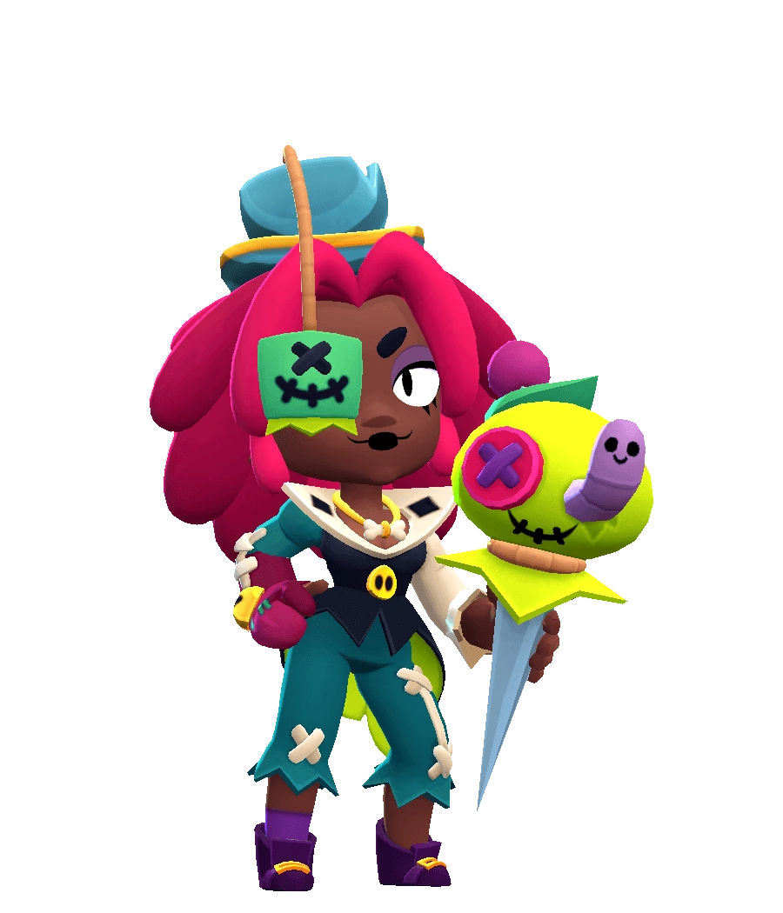

¿Quién es Juju?
Juju es la propietaria del Emporio de los Horrores, y no va a ninguna parte sin su muñeco vudú "mascota", Gris-Gris. Además de ser capaz de controlar los elementos, los muñecos que fabrica y vende a los visitantes de Starr Park tienen una calidad excelente.
Juju es una brawler Mítica que tiene una salud moderadamente baja y un daño variable. El atributo de Juju le permite moverse sobre el agua. Ella ataca lanzando un juguete vudú que explota en el suelo en un radio pequeño, lo que obtiene un beneficio diferente según el entorno en el que se encuentra y que puede aumentar más daño en el suelo; tiene más alcance en los arbustos; o ralentizar a los enemigos en el agua. Para su Súper, lanza una muñeca con cabeza que genera su muñeco vudú Gris-Gris, que tiene una salud moderada y ataca disparando agujas a los enemigos.
|  |
NIVEL DE FUERZA 11 |
Sus gadgets
MAESTRA DE LOS ELEMENTOS: El próximo ataque principal de Juju tiene el poder de los tres elementos. |
ELEMENTALISTA: juju obtiene una mejora en función del elemento en el que se encuentre. Tierra: reducción de daño. Hierba: invisibilidad. Agua: velocidad de movimiento aumentada. |
Sus habilidades estelares
 |
GRIS-GRIS BLINDADO: Juju invoca a Gris-Gris con un escudo protector. |
 |
ALFILERES PARALIZANTES: Los ataques de Gris-Gris también ralentizan a los enemigos durante 1,0 segundos. |
 Braian Arancibia
Braian Arancibia Aya El Baarar
Aya El Baarar